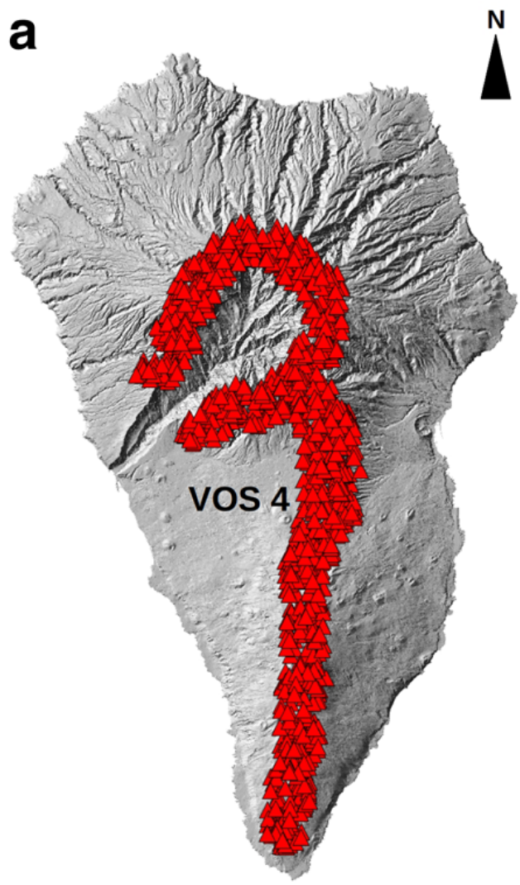

Path of steepest descent
Hydrological modeling
Digital elevation models - or DEM are incredibly useful datasets. DEM are raster data containing an elevation value at each pixel. Global DEM datasets such as SRTM or ASTER are usually produced from the ISS or satellite imagery, but higher-definition datasets can be produced from airborne LiDAR missions or structure-from-motion from UAVs. Here, we will use a DEM with a resolution of 25 m covering the island of La Palma.
Using only a DEM, hydrological analyses can help establishing a surface water system model that we can use to study the hydrological characteristics of surface hydrological processes. Thanks to that, it is possible to estimate such aspects as the most likely flow directions, catchment areas and drainage bassins. It is therefore extensively used in land-use planning to estimate potentially flooding areas or to design proposed drainage systems and facilities. Here, we will use this workflow to get a general idea of the possible lava flow inundation areas in La Palma:
flowchart LR
A[Flow accumulation] --> B[Stream network]
B --> C[Drainage basins]Several softwares propose implementations of hydrological analyses including QGIS, Matlab and ArcGIS. Here, we have pre-computed the important datasets for you, which are contained in the Hydrology group in the Layer Panel.
Objectives
- Understand the value of DEM datasets to extract a surface water runoff model.
- Explore the use of hydrological analyses for lava flow hazard assessment.
- Understand the benefits and limitations of this approach.
Surface drainage
Flow accumulation
Start by showing only the Flow Accumulation (log) layer in QGIS. Conceptually, the Flow Accumulation raster represents the cumulative number of upstream pixels that contribute to surface water drainage to any given downstream pixel. Starting from a DEM, the algorithm:
- Assumes that water at a given pixel will flow towards the adjacent pixel that shows the greatest \(-\Delta z\) to estimate the flow directions.
- Once flow direction is estimated, the algorithm counts how many upstream pixel contribute to any given downstream pixel.
Do it yourself!
- Starting from this DEM, can you estimate the most likely flow direction and the flow accumulation values?
Flow accumulation
- Pink lines show flow direction.
- The blue gradient shows flow accumulation → darker shades of blue indicate the contribution from more pixels.

- Look at the
Flow Accumulation (log)layer inQGIS. Here, we show thelogvalue to have a better visual rendering, so each pixel shows thelog10of the number of contributing pixels. - Analyse the dataset in perspective of the underlying DEM. Does it make sense? (Spoiler alert: it does!)
Stream network
Now turn on the Stream network layer in QGIS. As Flow Accumulation raster are slightly overwhelming, the Stream network algorithm simply applies a threshold of count values \(c\) to delineate a stream. If a given pixel has a number of contributing pixels \(C\) such as \(C \geq c\), then the pixel is assumed to be part of the stream. Think of the Stream network information as a higher-level version of the Flow Accumulation raster. As a matter of fact, Stream network is another word for path of steepest descent.
Stream network
From the same DEM as before, this is how the path of steepest descent would look:

Threshold value
Note that there is no universal value for \(c\): it depends on such aspects as the characteristics of the drainage system, the scale of the analysis or the resolution of the DEM. It should therefore be explored on a case-per-case basis.
Drainage basin
Turn on the Drainage basin layer in QGIS: this raster now classifies which stream each pixel contributes to. Think of it as a watershed, where ridges act as limits between zone contributing to different streams and valleys accumulate most of the surface flow. Validate that by observing the Drainage basin layer in perspective of the underlying topography.
Drainage basin
It is now possible to estimate where water on each pixel will go.

Maturity of the drainage system
You can observe a large discrepancy in the area and the shape of the various drainage basins.
- How do they spatially vary over the island?
- How do they relate to the underlying topography?
Things to observe: - Man-made structures can affect the surface runoff → Airport
Hazard assessment
Historical lava flows
Let's now place this data in the context of a hazard assessment. Start by downloading the geological map of La Palma by Carracedo et al., (2001) and spend some time looking at it.
Questions
- Can you spot where historical lava flows occurred?
- Are they originating from a single or multiple vents?
- In historical times, what part of the island has been most affected by lava flows?
- How do the directions of past flow match the conclusions reached from hydrological modeling?
Monogenetic vs polygenetic volcanism
La Palma is a composite volcano. As you can see both from the DEM and the geological map, the currently most active southern part contains several monogenetic vents. Monogenetic vents are typically active during a single eruption and not reactivated afterwards. The opening of a new vent is then controlled by several parameters (e.g., tectonic regime1), and predicting the spatial likelihood of vent opening is an additional complexity for long-term hazard and risk assessments in monogenetic fields. This is especially the case for Auckland, which is built on a monogenetic field2.
Here are some definitions of volcanic landforms from de Silva and Lindsay (2015)3:
Composite volcanoes
All conical or broadly conical polygenetic volcanoes constructed of accumulations of lava and pyroclastic deposits, sometimes alternating, erupted from vent(s) located at the summit (eruptions can also on occasion occur from the flanks) of the volcano.
Monogenetic vents
Discrete minor volcanic landform that forms during one eruptive cycle. Can be mafic (cinder or scoria cones, maars, diatremes, tuff cones, tuff rings, and scutulum shields) or silicic (lava domes and coule es) in composition. Typical lifetimes of years to decades for mafic centers, decades to centuries for silicic ones.
Polygenetic vents
Large discrete volcanic landform that forms during several episodic eruptive cycles. Typical lifetimes of \(10^4-10^5\) years. Can be mafic or silicic in composition. Most common types are composite volcanoes and shield volcanoes.
Probability of vent opening
As we will discuss throughout the exercices, assessing where the next monogenetic vent will open is a difficult process. In their 2019 paper, Marrero et al. (2019)4, used a random model to represent the complexity of the spatial distribution of vent location that the monogenetic volcanic activity can produce. The resulting vents are shown in Figure 1. This is a discussable choice, and you are invited to refer to the original paper for their motivations. In any case, one assumption behind this approach is that all vents shown in Figure 1 have an equal probability of occurrence.

Questions
If all vents in Figure 1 have an equal probability of occurrence, does that mean that the entire island is uniformly exposed to lava flow inundation? Use the drainage basins and the stream networks to estimate: - What parts of the island are most exposed to lava flow inundation? - Are there any safe/shadow parts?
The 2021 eruption
The 2021 eruption of Cumbre Vieja started on September 19 and lasted until December 25. During this period, multiple vents opened, some producing tephra whilst other produced compound lava flows that reached the sea. In QGIS, the 2021 Eruption layer group shows you both the vents and the chronology of lava flows provided by the Copernicus Emergency Management Service (CMS).
Identify feature tool
By using the Identify Feature tool, you can click on any lava flow outline and see its date field.

Using the lava flow outlines, we computed the evolution of flow length and flow width through time as shown in Figure 2.
Evolution of the flow field
Using the flow outlines in QGIS and Figure 2, estimate:
- How accurate would have been the steepest descent approach to forecast flow inundation of the 2021 eruption? How different is the actual flow compared to the drainage network?
- How dynamic is a months-long lava flow? Is it a single event or a compound pulsatory phenomena?
- What event do you think corresponds to the dashed red line in Figure 2? What happens before and after?
- What are the advance and widening rates of the 2021 lava flow? Can you use it to estimate the advance and widening of possible lava flows from other vents?

Limitations
References
-
Gallant, E., Cole, L., Connor, C.B., Donovan, A., Molisee, D., Morin, J., Walshe, R., Wetmore, P., 2021. Modelling eruptive event sources in distributed volcanic fields 4, 19. http://jvolcanica.org/ojs/index.php/volcanica/article/view/119 ↩
-
Deligne, N.I., Fitzgerald, R.H., Blake, D.M., Davies, A.J., Hayes, J.L., Stewart, C., Wilson, G., Wilson, T.M., Castelino, R., Kennedy, B.M., Muspratt, S., Woods, R., 2017. Investigating the consequences of urban volcanism using a scenario approach I: Development and application of a hypothetical eruption in the Auckland Volcanic Field, New Zealand. Journal of Volcanology and Geothermal Research 336, 192–208. https://doi.org/10.1016/j.jvolgeores.2017.02.023 ↩
-
de Silva, S., Lindsay, J.M., 2015. Chapter 15 – Primary Volcanic Landforms, in: The Encyclopedia of Volcanoes. pp. 273–297. https://doi.org/10.1016/B978-0-12-385938-9.00015-8 ↩
-
Marrero, J.M., García, A., Berrocoso, M., Llinares, Á., Rodríguez-Losada, A., Ortiz, R., 2019. Strategies for the development of volcanic hazard maps in monogenetic volcanic fields: the example of La Palma (Canary Islands). J Appl. Volcanol. 8, 6. https://doi.org/10.1186/s13617-019-0085-5 ↩